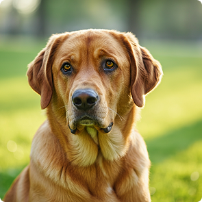

<div class="animal-modal-backdrop is-open">
  <div class="animal-modal">
    <button class="animal-modal__animal-close-button">
      <svg class="animal-close-button__icon" width="24" height="24">
        <use href="/img/icons.svg#close"></use>
      </svg>
    </button>

    <div class="animal-modal__wrapper">
      

      <div class="animal-modal__content-wrapper">
        <p class="animal-modal__species">Собака</p>
        <h2 class="animal-modal__name">Джек</h2>
        <div class="animal-modal__age-gender-wrapper">
          <p class="animal-modal__age">4 роки</p>
          <p class="animal-modal__gender">Хлопчик</p>
        </div>
        <h3 class="animal-modal__description-title">Опис:</h3>
        <p class="animal-modal__description">
          Цей пухнастик має унікальну історію та чекає на люблячу родину. Його
          характер — спокійний та дружелюбний. Повністю здоровий, вакцинований,
          привчений до лотка. Ідеально ладнає з дітьми та іншими тваринами, тому
          стане чудовим другом для всієї сім'ї.
        </p>
        <h3 class="animal-modal__health-title">Здоров’я:</h3>
        <p class="animal-modal__health">
          Здоровий, кастрований, вакцинований. Потребує регулярного вичісування
          шерсті.
        </p>
        <h3 class="animal-modal__behavior-title">Поведінка:</h3>
        <p class="animal-modal__behavior">
          Бажано бути єдиною твариною в сім'ї. Не любить конкуренції за увагу.
        </p>
        <button class="take-home-btn" data-id="id">Взяти додому</button>
      </div>
    </div>
  </div>
</div>
